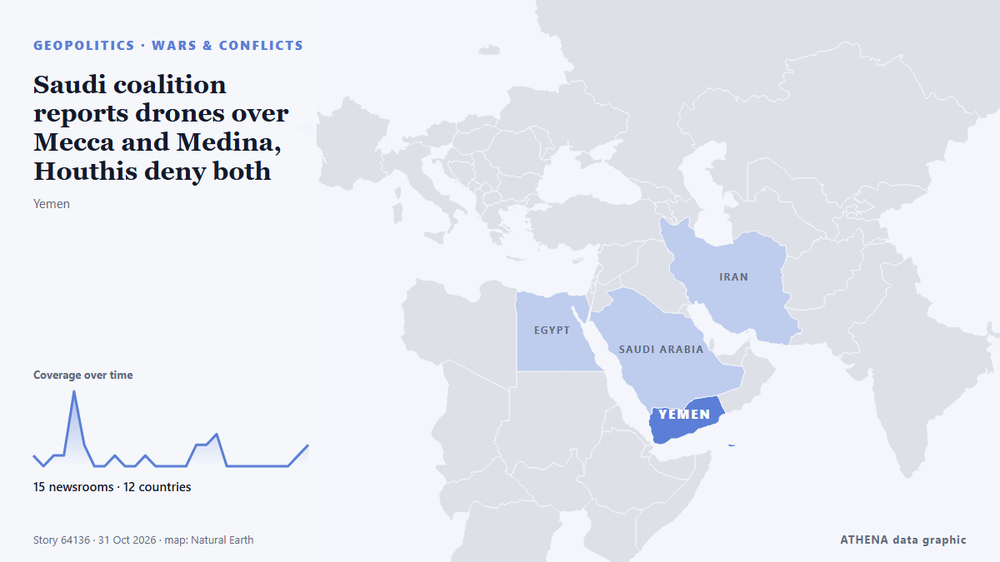

Saudi coalition reports drones over Mecca and Medina, Houthis deny both

Coalition reports destruction of 2 aerial threats amid escalating attacks by Yemen's Houthis. من Express Tribune
نشرته بشكل مستقل 15 مصدرًا في 12 دولة منذ 30 أكتوبر، وأول من نشره Express Tribune؛ والتغطية لا تزال تتسع. يقدّر ATHENA الخطر بأنه معتدل (3.4/10)، ويعود ذلك أساسًا إلى خطورة الضرر الموصوف ونطاقه الجغرافي والقطاعي. الثقة 91٪ (مرتفعة)، وعدد المصادر المستقلة المؤكِّدة: 15، بمتوسط موثوقية للمصادر يبلغ 79٪.
لماذا يهم: البحر الأحمر ومضيق باب المندب هما أقصر طريق بحري بين آسيا وأوروبا عبر قناة السويس. تدفع الهجمات على السفن التجارية الشركات إلى الالتفاف حول أفريقيا، ما يضيف وقتًا وكلفة على التجارة العالمية.
ما الذي تغيّر: 22 تقارير جديدة من 12 غرف أخبار خلال 24 ساعة حتى 31 أكتوبر.
العنوان الأول: Yemen's Houthis deny launching drone after coalition reports interception in Mecca region
تُعرض العناوين بالإنجليزية كما نُشرت.
نظرة سريعة
اختير وقُيِّم وكُتب وفق منهجية ATHENA المنشورة. لا يتدخل أي محرر في الأحداث بعينها. كيف يُنتَج ›
| 30 Oct 01:52 UTC | 1 |
|---|---|
| 30 Oct 02:52 UTC | 0 |
| 30 Oct 03:52 UTC | 1 |
| 30 Oct 04:52 UTC | 1 |
| 30 Oct 05:52 UTC | 7 |
| 30 Oct 06:52 UTC | 2 |
| 30 Oct 07:52 UTC | 0 |
| 30 Oct 08:52 UTC | 0 |
| 30 Oct 09:52 UTC | 1 |
| 30 Oct 10:52 UTC | 0 |
| 30 Oct 11:52 UTC | 0 |
| 30 Oct 12:52 UTC | 1 |
| 30 Oct 13:52 UTC | 0 |
| 30 Oct 14:52 UTC | 0 |
| 30 Oct 15:52 UTC | 0 |
| 30 Oct 16:52 UTC | 0 |
| 30 Oct 17:52 UTC | 2 |
| 30 Oct 18:52 UTC | 2 |
| 30 Oct 19:52 UTC | 3 |
| 30 Oct 20:52 UTC | 0 |
| 30 Oct 21:52 UTC | 0 |
| 30 Oct 22:52 UTC | 0 |
| 30 Oct 23:52 UTC | 0 |
| 31 Oct 00:52 UTC | 0 |
| 31 Oct 01:52 UTC | 0 |
| 31 Oct 02:52 UTC | 0 |
| 31 Oct 03:52 UTC | 1 |
| 31 Oct 04:52 UTC | 2 |
| 30 Oct 06:41 UTC | 0.0 |
|---|---|
| 30 Oct 06:53 UTC | 1.2 |
| 30 Oct 07:34 UTC | 1.7 |
| 30 Oct 14:03 UTC | 2.4 |
| 31 Oct 06:12 UTC | 3.4 |
| 31 Oct 06:12 UTC | 3.4 |
لماذا هذه الأرقام
الأهمية
الخطر
الثقة
التغطية — من نشر الخبر ومتى
العنوان كما نُشر · يفتح الأصل- Express Tribune · باكستان · PakistanSaudi-led coalition intercepts Houthi ballistic missile, drone near Riyadh
- Arab News · المملكة العربية السعودية · Saudi ArabiaSaudi-led coalition says intercepted Houthi drone in Makkah region
- Asharq Al-Awsat (English) · المملكة العربية السعودية · Saudi ArabiaCoalition Intercepts Houthi Drone over Makkah Region
- Anadolu Agency (English) · تركيا · TurkeySaudi-led coalition says it downed Houthi drone over Mecca region, while group denies involvement
- Middle East Eye · INTHouthis deny Saudi-led coalition claims of firing drone towards Mecca
- The Straits Times · سنغافورة · SingaporeYemen's Houthis deny launching drone after coalition reports interception in Mecca region
- Business Recorder · باكستان · PakistanSaudi-led coalition says it destroyed drone fired by Yemen's Houthis over Makkah
- The Daily Star — page reader · بنغلاديش · BangladeshSaudi coalition says intercepted Houthi drone in Makkah region
- Free Malaysia Today · ماليزيا · MalaysiaHouthis deny launching drone intercepted in Mecca region
- Al-Monitor · الولايات المتحدة · United StatesYemen's Houthis deny launching drone after coalition reports interception in Mecca region
- News of Bahrain · البحرين · BahrainSaudi Coalition Intercepts Houthi Drone in Makkah Region
- Middle East Eye · INTMorning update
- Kurdistan24 (English) · العراق · IraqSaudi Arabia Says Houthi Missiles Intercepted Over Riyadh
- Anadolu Agency (English) · تركيا · TurkeySaudi Arabia declares danger over after emergency alert near Yemen border
- Asharq Al-Awsat (English) · المملكة العربية السعودية · Saudi ArabiaCoalition Downs 2 Drones Fired at Saudi Arabia
- NDTV · الهند · IndiaSaudi Coalition Says Intercepted Drone Over Riyadh, Missile In South
- Al-Monitor · الولايات المتحدة · United StatesSaudi-led coalition says it downs Houthi drone over Medina; Houthis deny attack
- Al-Monitor · الولايات المتحدة · United StatesSaudi-led coalition says it downs drone over oil-rich Eastern Region
- Anadolu Agency (English) · تركيا · TurkeySaudi-led coalition intercepts Houthi drone in Medina region
- The Straits Times · سنغافورة · SingaporeSaudi-led coalition says it downs Houthi drone over Medina; Houthis deny attack
- Middle East Eye · INTSaudi coalition reports drones over Mecca and Medina, Houthis deny both
- Khaama Press · أفغانستان · AfghanistanSaudi-Led Coalition Intercepts Houthi Drones Over Eastern and Southern Saudi Arabia
- Anadolu Agency (English) · تركيا · TurkeySaudi-led coalition intercepts Houthi drone over southern region
- Business Recorder · باكستان · PakistanSaudi-led coalition says it downs drone over oil-rich Eastern Region